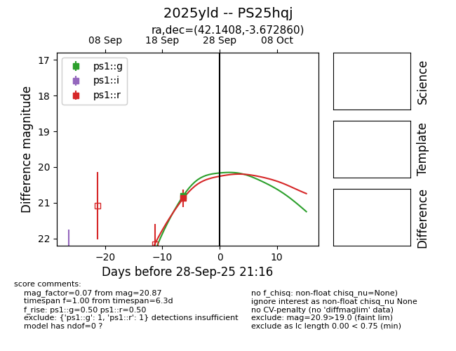
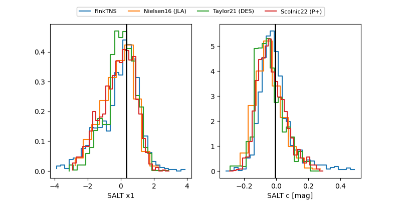

TNS: 2025yld
YSE: 2025yld
2025yld (yse,tns)
PS25hqj (panstarrs)
equatorial (ra, dec) = (42.1408,-3.67286)
galactic (l, b) = (178.0798,-53.50307)


last ps1::g=20.80, ps1::r=20.87
1 ps1::g, 1 ps1::r detections